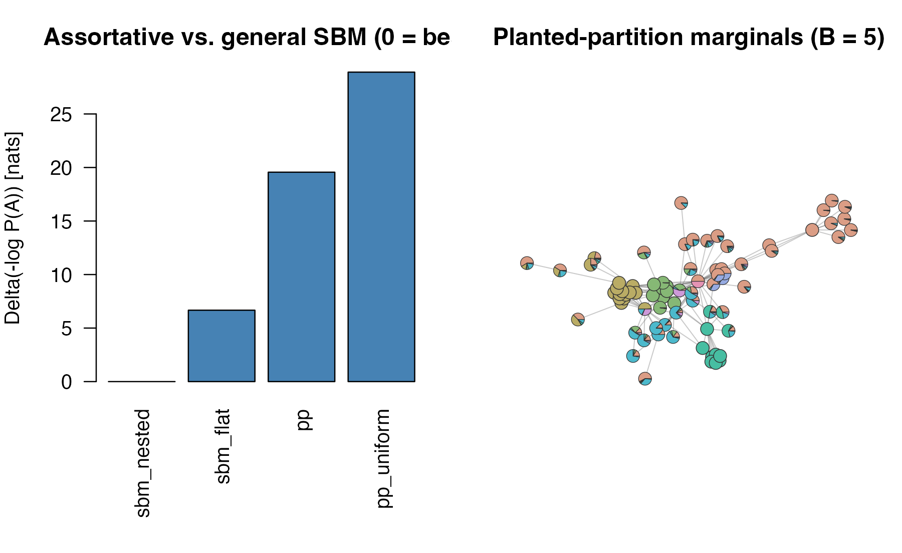
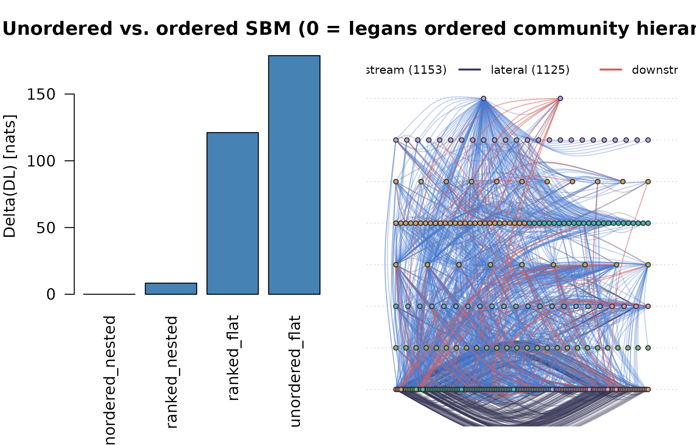

Assortative & Ordered (Ranked) Communities
Source:vignettes/assortative-and-ordered-sbms.Rmd
assortative-and-ordered-sbms.RmdThis article combines the assortative_sbm and
ordered_sbm demos, covering two specialized microcanonical
SBM priors: the planted-partition SBM for assortative
community detection (Zhang & Peixoto 2020) and the ranked
(ordered) SBM for discovering directed feed-forward hierarchies
(Peixoto 2022).
1. Assortative community structure (planted-partition SBM)
The planted-partition model restricts block interactions to
within-group vs. between-group densities, yielding a sharper prior
whenever community structure is predominantly assortative.
compare_assortative_models() tests non-uniform and uniform
planted-partition models directly against general flat and nested
SBMs.
lesmis <- load_or_fallback_lesmis()
g_lm <- lesmis$graph
set.seed(42)
pp_nu <- minimize_pp_blockmodel_dl(g_lm, uniform = FALSE)
pp_u <- minimize_pp_blockmodel_dl(g_lm, uniform = TRUE)
print(pp_nu)
#> <planted-partition block state: degree-corrected, non-uniform assortativity, B = 5 (Be = 4.60), E_in/E = 76.8%, DL = 719.4225 nats>
pp_assortativity(pp_nu)
#> $E_in
#> [1] 195
#>
#> $E_out
#> [1] 59
#>
#> $E_total
#> [1] 254
#>
#> $fraction_in
#> [1] 0.7677165
#>
#> $B
#> [1] 5
#>
#> $Be
#> [1] 4.598904
#>
#> $err
#> [1] 43 32 29 16 75
set.seed(42)
cmp_pp <- compare_assortative_models(
g_lm,
models = c("pp", "pp_uniform", "sbm_flat", "sbm_nested"),
method = "posterior",
nsamples = 80L,
thin = 5L,
burnin = 40L
)
print(cmp_pp)
#> <assortative vs. general SBM comparison (DC, posterior/variational)>
#> model B description_length posterior_entropy neg_log_evidence delta
#> sbm_nested 7 705.959 38.531 683.363 0.000
#> sbm_flat 6 706.720 23.132 690.033 6.669
#> pp 5 719.422 36.175 702.923 19.560
#> pp_uniform 4 725.074 16.638 712.270 28.907
#> posterior_weight
#> 9.99e-01
#> 1.27e-03
#> 3.20e-09
#> 2.79e-13
#> Best model: sbm_nested
set.seed(42)
post_pp <- sample_posterior(pp_nu, nsamples = 80L, thin = 5L, burnin = 40L)
mode_pp <- partition_mode_state(post_pp$samples)
old_par <- graphics::par(mfrow = c(1L, 2L), mar = c(7, 4, 3, 1))
tab <- cmp_pp$summary
graphics::barplot(
tab$delta,
names.arg = tab$model,
las = 2,
ylab = "Delta(-log P(A)) [nats]",
col = ifelse(tab$model == cmp_pp$best_model, "darkorange", "steelblue"),
main = "Assortative vs. general SBM (0 = best)"
)
graphics::par(mar = c(2, 2, 3, 1))
plot_marginals(
g_lm, mode_pp,
main = sprintf("Planted-partition marginals (B = %d)", pp_nu$B)
)
graphics::par(old_par)2. Ordered (ranked) communities in directed networks
For directed networks with directional flow (such as neural circuits,
food webs, or citation hierarchies), ranked_block_state()
and nested_ranked_block_state() jointly infer group
memberships and a latent rank ordering \(u_r\) separating upstream (\(u_i < u_j\)), lateral (\(u_i = u_j\)), and downstream (\(u_i > u_j\)) edges.
celegans <- load_or_fallback_celegans()
g_ce <- celegans$graph
set.seed(42)
cmp_ord <- compare_ordered_models(
g_ce,
models = c("unordered_flat", "unordered_nested",
"ranked_flat", "ranked_nested"),
method = "map",
nruns = 2L
)
print(cmp_ord)
#> <ordered (ranked) vs. unordered SBM comparison (DC, MAP)>
#> model B description_length delta posterior_weight
#> unordered_nested 22 8531.236 0.000 1.00e+00
#> ranked_nested 20 8583.880 52.644 1.37e-23
#> ranked_flat 15 8650.186 118.950 2.19e-52
#> unordered_flat 12 8715.276 184.040 1.18e-80
#> Best model: unordered_nested
rk_nest <- cmp_ord$states$ranked_nested
ec <- ranked_edge_counts(rk_nest)
ec_tot <- ec$upstream + ec$lateral + ec$downstream
cat(sprintf(
"Nested ranked SBM flow: %d upstream (%.1f%%), %d lateral (%.1f%%), %d downstream (%.1f%%)\n",
ec$upstream, 100 * ec$upstream / ec_tot,
ec$lateral, 100 * ec$lateral / ec_tot,
ec$downstream, 100 * ec$downstream / ec_tot
))
#> Nested ranked SBM flow: 1275 upstream (54.0%), 921 lateral (39.0%), 163 downstream (6.9%)
old_par <- graphics::par(mfrow = c(1L, 2L), mar = c(8, 4, 3, 1))
tab_o <- cmp_ord$summary
graphics::barplot(
tab_o$delta,
names.arg = tab_o$model,
las = 2,
ylab = "Delta(DL) [nats]",
col = ifelse(tab_o$model == cmp_ord$best_model, "darkorange", "steelblue"),
main = "Unordered vs. ordered SBM (0 = best)"
)
graphics::par(mar = c(1, 1, 3, 1))
plot_ranked_hierarchy(
rk_nest,
vertex_cex = 0.65,
main = "C. elegans ordered community hierarchy"
)
graphics::par(old_par)